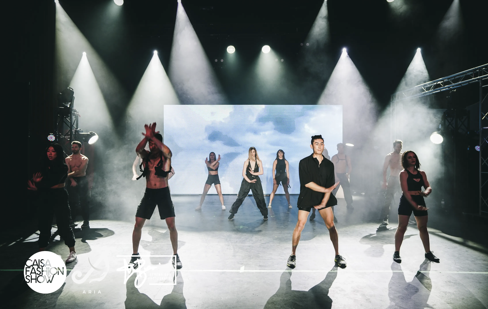

Caisa Fashion Show (CFS) is the largest student-run charity fashion show in Canada. CAISA (Canadian Asian International Student Association) is one of the largest multicultural clubs at Western University, and works to provide a sense of community for students at the school. Each year, our annual charity fashion show raises money (total of $385,000 to date) for Children’s Health Foundation, an organization dedicated to raising funds to support specialized health care and research for children and youth on both local and international levels. Last year, we proudly raised a total of $35,000 which was donated directly to congenital heart defect research. Our annual contributions have aided our local hospital with new technology that has been beneficial to various treatments and tests. This year, I am apart of the media department where we photograph models to create and publish magazines, events, graphic designs, and video content. I am responsible to build PowerPoint and excel spreadsheets to keep track of upcoming events, and to organize photoshoots with the team to collaborate with venues and sponsors.

Western Founders Network:
(Sept 2019-Present)
Position: Future View Panel Conference– Director
Western Founders Network is a team of students supporting the community with the necessary means to take an active role in shaping our future. Founders is the largest technological and business entrepreneurial club on campus where we focus on converting long term goals into practical and creative plans for action. This year, I am the director of one of our annual conference events, Future View. This conference provides attendees direct insight into the future of technology through the eyes of industry leaders, hands on workshops, and open panel discussions.